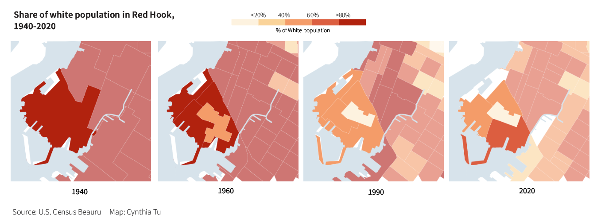
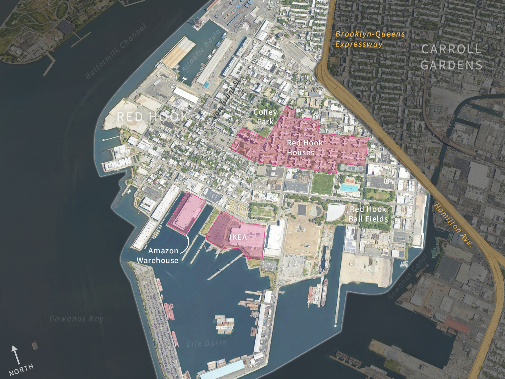
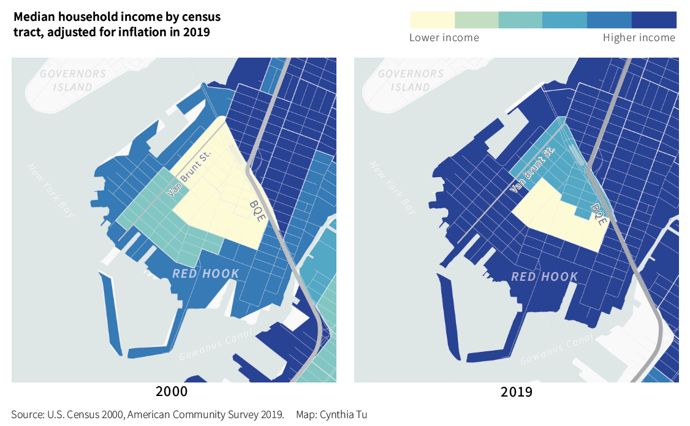
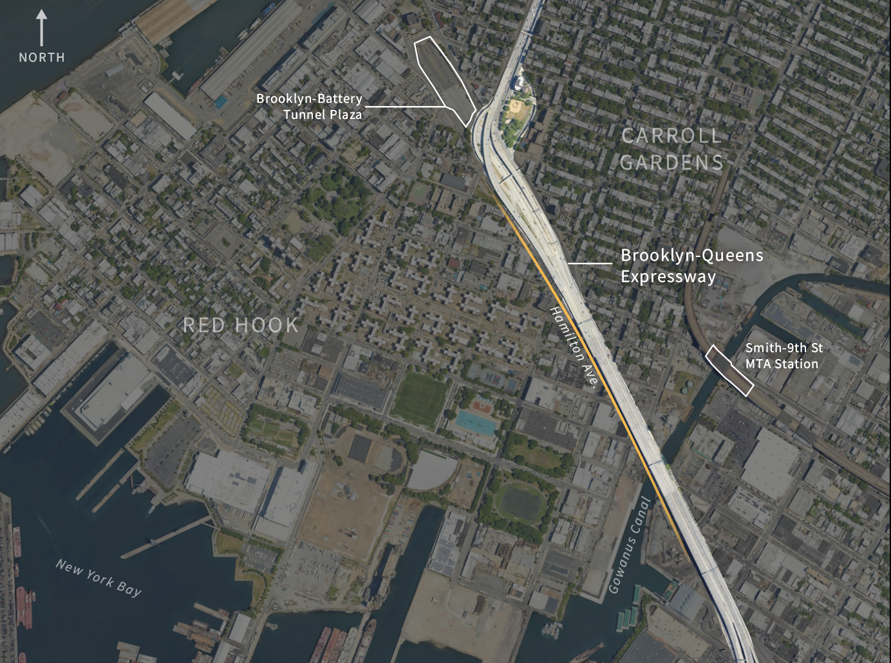
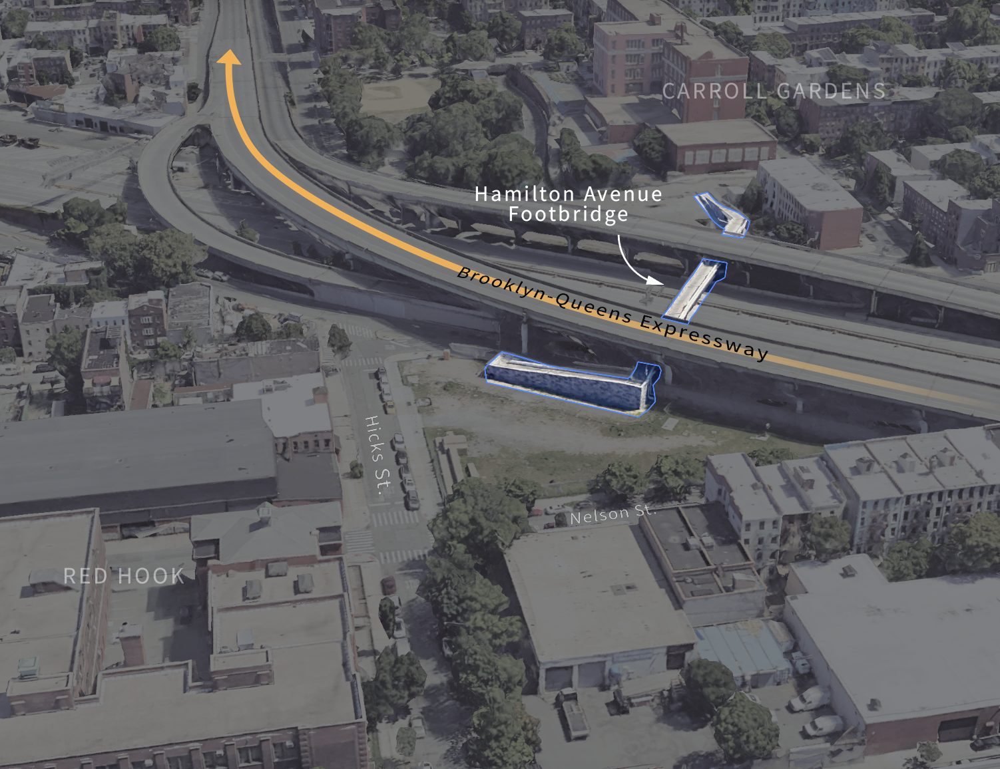
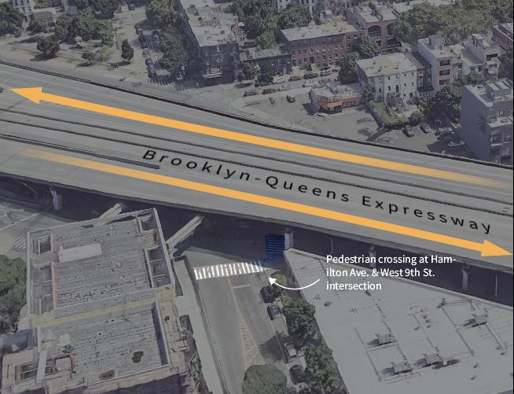

Divide One Neighborhood, Connect the Others
How a Highway Torn Red Hook Apart
On July 8, 1940, a notice arrived for hundreds of people living along Hamilton Avenue, Brooklyn.
“The families served have ten days in which to remove their belongings,” the notice read. “If they still refuse, Sheriff Mangano faces a sterner task of putting their belongings on the street.”
Tenants on Hamilton Avenue had already known that this day would come. A year earlier, the city started building the southern extension of the Brooklyn-Queens Expressway (BQE) under the instruction of Robert Moses, the head architect of New York State’s highway system. Moses proposed to build a tunnel to connect downtown Manhattan and Brooklyn. The proposal required the widening of Hamilton Avenue. These buildings were in the way.

Eighty years ago, a modern highway project, designed to bind the city together, sliced off a working-class, immigrant-populated neighborhood from the rest of the city. The forced division tore the social fabric of Red Hook, leaving generations of people to live with its aftermath even to this day.
FORCED MIGRATION
The first wave of vacate notices was issued in May. In July came the ultimatum. While most who were displaced hustled about finding new sites for their businesses and homes, a few began a tug-of-war with the Brooklyn Supreme Court.
Though the HOLC saw the tunnel project as a “favorable influence” on Red Hook that would increase the area’s “desirability”, the highway that split Red Hook from the rest of the city did not revitalize the area as the HOLC had envisioned.
In 1938, New York City’s Housing Authority (NYCHA) started building housing projects in Red Hook to house the growing number of workforce on the waterfront. The apartments were well-built: amenities included self-operating elevators, trash chutes in the hallways, in-building laundry rooms, and sports facilities. Most tenants were Irish and Italian dockworkers and their families.
However, Red Hook saw a drop in its workforce and population in the 1950s as the completion of the highway system increasingly moved manufacturing on the waterfront offshore.
“Red Hook’s economy collapses from boom town to abandoned warehouses and empty lots, from a bustling shoreline to a silent, rotting one,” according to Red Hook WaterStories.
As more European immigrants working in the area started to move out of Red Hook, the housing projects began to house more Black and Hispanic families. Today, Red Hook Houses accommodate about 6,000 residents, who are mostly families of color. Latinx and Black residents make up about 70% of Red Hook’s total population, according to the 2020 U.S. Census.
ai2html placeholder
“Redlining and highway building are often ways to devalue property based on who lives there,” said Adam Susaneck, a New York City-based architect. Susaneck runs “Segregation by Design,” a project that documents the destruction of communities of color due to redlining, urban renewal, and freeway construction.
“The ‘urban renewal’ movement, and the construction of highways are proxies to draw financial lines between neighborhoods.” Susaneck said, “What we see is the search for new tools for continuing the old ways.”
Gentrification and real estate development could be new proxies to perpetuate the racial lines into the future, he added.
scrolly section
“It's interesting that the BQE really separated and made the situation potentially worse for a lot of people in Red Hook.” Geis added.
The highway not only splits Red Hook geographically from neighborhoods north of Hamilton Avenue but also enhanced racial segregation in the area.
For Vanessa McKnight and many young folks of color living in Red Hook back in the 1970s, crossing over to the North side of BQE meant being exposed to racially-incentivized violence. On her morning commute to school on the other side of Hamilton Avenue, she recalled that a group of white young men, carrying bats and chains, would wait at the end of the overpass to beat up students coming from Red Hook.
“When we got to the top of the bridge, we would lower our voices, whisper, and listen. We could hear the bats and chains clanking… They would beat, especially on the black young men, they would beat them,” McKnight shared her experience with a community-led project on Red Hook residents’ interactions with the BQE. “We were forced to choose between getting beat up with bats or dropping out.”
RED HOOK TODAY
Some residents in Red Hook, however, feel that the isolation has helped preserve some of Red Hook’s unique characteristics. David Sharps is the caption of the Brooklyn Waterfront Museum. He has been living on a barge that anchors off the coast of Red Hook since 1994.
“Being isolated, one could argue, has been a good thing for Red Hook,” Sharps said, “because of the difficulty of getting here, its isolation has kept high rises out for many years…So some of those disadvantages helped keep us with some other historic charm, cobblestones that you still find here.”
But some of Red Hook’s “historic charm” are in danger now as commercial developers set sight on the neighborhood.
ai2html placeholder
In 2008, IKEA opened its first New York City location in Red Hook, which sits on 22 acres of land on Red Hook’s waterfront. Before its construction, the Swedish furniture store’s proposal attracted locals’ opposition, as IKEA planned to fill the drydock on the Erin basin for parking space–a fight that IKEA won eventually. Delivery giants like Amazon and UPS also bought land in Red Hook to build last-mile delivery hubs. With more delivery trucks appearing in the area, residents raised concerns over pedestrian safety and air pollution concerns.
In recent years, Red Hook has attracted an influx of higher-earning populations, who came to the neighborhood seeking cheaper renting options. Walking through blocks along Van Brunt Street, one could easily sight newly developed living units and art studios transformed from old warehouses.
Sharps said some of his friends who had been long-time residents of Red Hook were pushed out of the neighborhood due to rent hikes. “Now that the real estate people and landlords are doubling tripling their rent of what it was 10, 15 years ago.”
ai2html placeholder
With new developments coming into the area, the neighborhood's economic dynamic seems to be shifting. When Geis carried out her research in Red Hook in 2013, which was one year after Hurricane Sandy, she observed an “interesting dichotomy” between people living along Van Brunt Street and the Red Hook Houses.
“When I was doing interviews with people in the Red Hook houses, the effects of Hurricane Sandy were still current.” Geis recalled that residents living in the projects were still relying on generators that worked inconsistently for heating a year after the hurricane. “Whereas like some of the people who live off Brunt Street, had more money, and had some of those brownstones that were closer to the water and were affected pretty drastically at the moment–they were already talking about Hurricane Sandy in the past.”
DETACHED FROM EVERYWHERE
For those who do not own cars, access to public transportation is another concern that looms over the residents daily. The nearest subway station to Red Hook is Smith–Ninth Streets station, which sits on the northeast side of Hamilton Avenue. Besides the MTA bus services, residents must cross the BQE to get over to the train station and other parts of Brooklyn.
“[The highway] is not even pleasing to look at. It's super ugly. Like, no one wants to even come into Red Hook because that's the first thing they got to see,” said Quincy Phillips, a Red Hook native who has lived in the neighborhood their whole life. “It's really messed up because Red Hook itself is such a beautiful place.”
ai2html placeholder
From February to April 2023, Phillips and a team of community organizers at Red Hook Initiative surveyed more than 600 Red Hook residents and commuters about their experiences interacting with the BQE.
There are two ways to get to the North side of Hamilton Avenue from Red Hook by foot. Pedestrians could either use the Hamilton Avenue footbridge–which goes above the BQE ground traffic and beneath the BQE corridor; or cross the intersection of West 9th Street and Hamilton Ave–which requires crossing six lanes of busy traffic.
“The footbridge–it shakes when you're like walking past. When there's like trucks under it going past it, you feel a little vibration. So people hold on to the poles and stuff,” Phillips said.
Residents also felt unsafe crossing the intersection, and busy traffic is only one of the many reasons. Phillips explained that the pedestrian stoplight only lasts about 20 to 25 seconds. In addition, crossing the intersection at night could be dangerous due to the lack of streetlights. Many residents also reported bad air quality at the crosswalk due to the highway traffic and trucks passing through Hamilton Avenue.
ai2html placeholder
 “When I'm there under that [highway] bridge. It's like, you could see empty bolts falling from the bridge. It literally looks like it's collapsing.” Phillips said, “But you know, we don’t have a choice because we’re blocked off from everywhere else.”
As the highway nears 80 years old, experts warned that sections of the BQE might start crumbling soon. The city’s transportation department is currently developing the “BQE Corridor Vision” project, which aims to roll out repairs and upgrades to rebuild a “safe, modern, resilient roadway we need.”
The plan to keep the BQE was slammed by locals whose lives have been affected by the highway for years. Community advocates are pushing for tearing the highway down completely or transforming it into community green spaces.
Phillips, who has witnessed community leaders in Red Hook fighting with the DOT for improvement of the BQE’s Hamilton section, felt pessimistic that the DOT might prioritize locals’ needs. He said that the DOT had been slow to respond to complaints, working on minor changes that are not current.
“Robert Moses came, and he wanted to build this super bridge in order for people to save time and energy. He wasn't really thinking about the actual people that were going to be affected by it,” Phillips said. “Personally, I think the DOT is doing the same thing that Robert Moses did. Not in the sense that they don't want to see changes and stuff. It's just like they're not doing the right thing right now. If they continue to go down this path, I honestly think history will repeat itself.”